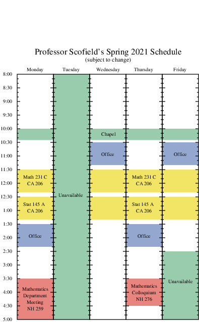

MATH
231C
Differential Equations with Linear Algebra
Spring, 2021
Main
Calendar
Syllabus
:
WebWork
(various HW assignments)
Etherpad
Hand-checked assignment solutions:
1
,
2
Test solutions:
Test 1
Known errors
in the textbook
Grading Codes
(see the
TAE document
for many algebra helps)
Professor Scofield's schedule
(see right margin)
Video resources
Linear Algebra
examples (from mathispower4u.com)
Differential Equation
examples (from mathispower4u.com)
Instructional videos from
Khan Academy
on
linear algebra
topics, and on
ODEs

Additional reading resources
Introduction to Linear Algebra
, by Thomas Scofield
Relevant material is found in the first 2 chapters, excepting Sections 1.4 and 1.6.
Elementary Linear Algebra
, notes by Keith Matthews of U. of Queensland
Notes on Diffy Qs: Differential Equations for Engineers
, by Jirí Lebl
Elementary Differential Equations
, by William F. Trench, with
student solutions manual
Software Links
A
level curve plotter
A plotter: try out your
functions involving the Heavyside unit step
here
Direction fields
popular
dfield
program:
Matlab version
or
standalone java program
draws direction field only, not integral curves)
A
direction field plotter by Ariel Barton
(of the Univ. of Arkansas)
Darryl Nester's direction field plotter
(of Bluffton College)
Direction field plotter written in geogebra
(also will display solution curves)
One written locally as a
SageMathCell App
Phase plane
A general
phase plane plotter for autonomous systems
by Ariel Barton (of the Univ. of Arkansas)
popular
pplane
program: Use links for
dfield
above
A
SageMathCell Phase Plane app
, and a
counterpart in 3D
An app for emphasizing connections between matrices, e-values and phase portrait for
linear systems
Numerical solutions app
(Euler method, Runge-Kutta, and more), an
Euler method app in Sage
Sage:
official website
(documentation/downloads) |
SageMathCell
(one-off commands)
Sage
examples
relevant to MATH 231
Sage cell for carrying out
elementary row operations
on a matrix
Eigenvectors:
Compare unit input vector
u
with output
Au
, or see
an animation
Undetermined coefficients: test choices for
y
p
on
1st-order
and
2nd-order
DEs
Eigenvalues and eigenvectors for a matrix
An example from class of
plotting implicit solutions of a separable DE
An example using Runge-Kutta method for
predator-prey
and
satellite orbit
Wolfram alpha
Content Supplements
Differential equations supplements
Table of
Laplace transforms
Some worked examples of
inverse Laplace transforms
More
Inverse Laplace transform practice
Linear algebra supplements
Matrices/Gaussian elimination on TI-83/84:
Video instruction on a
TI-84
(shows steps for entering a matrix), and on a
TI-83
Some
summary print instructions
on matrix capabilities from an unknown source